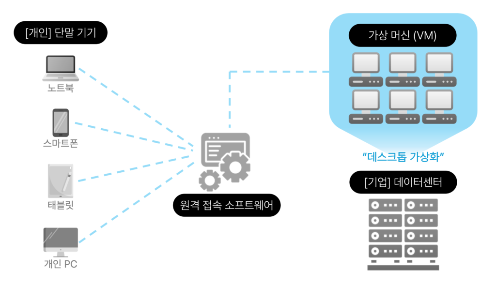
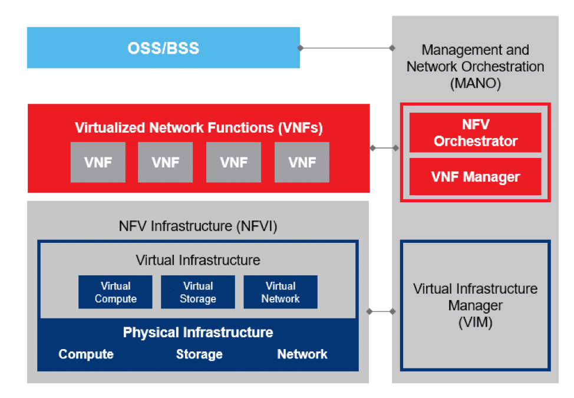
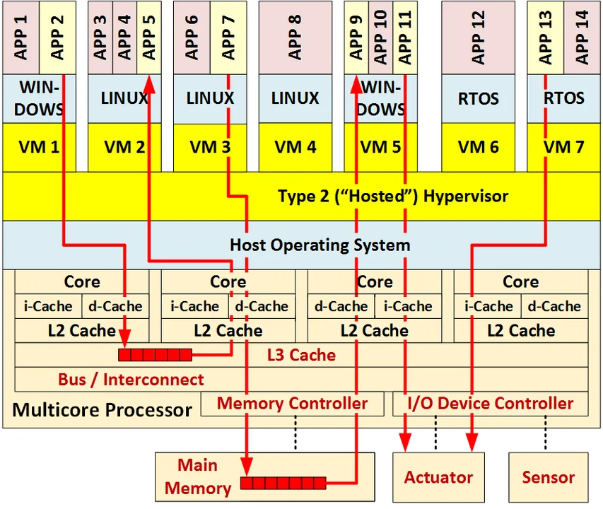
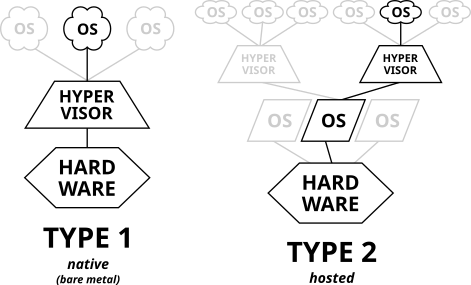
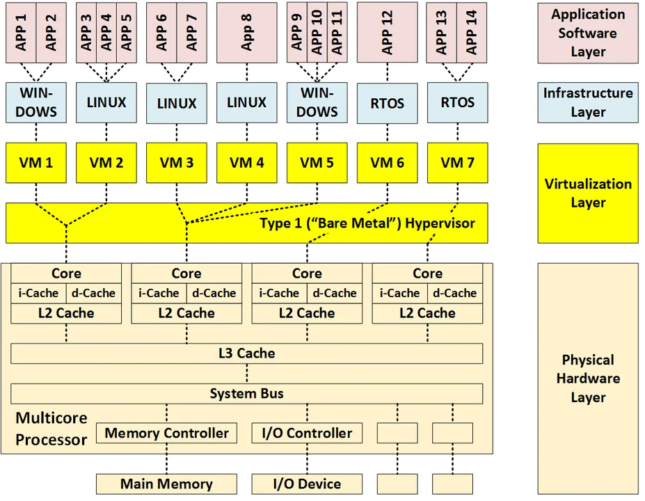
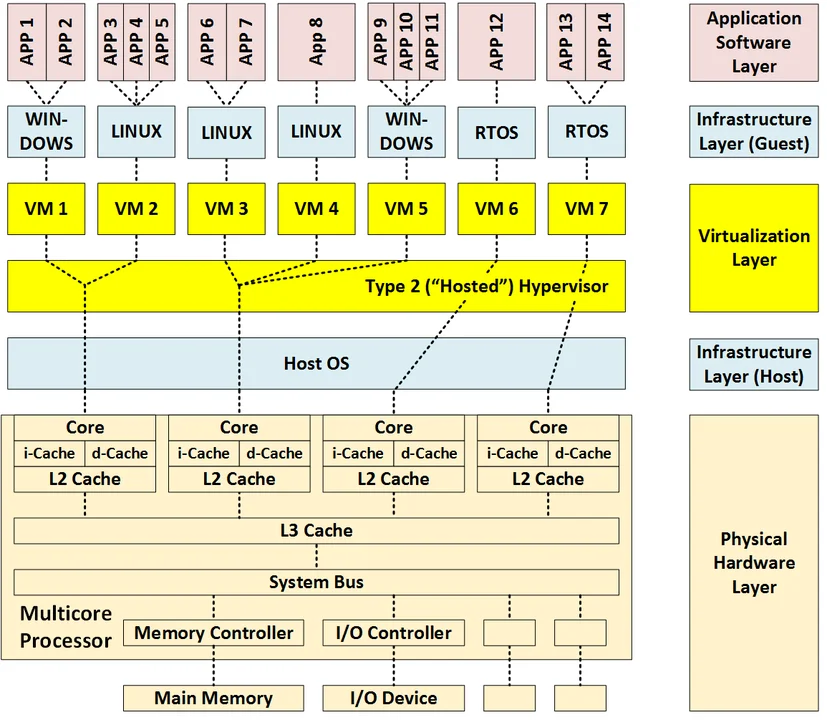
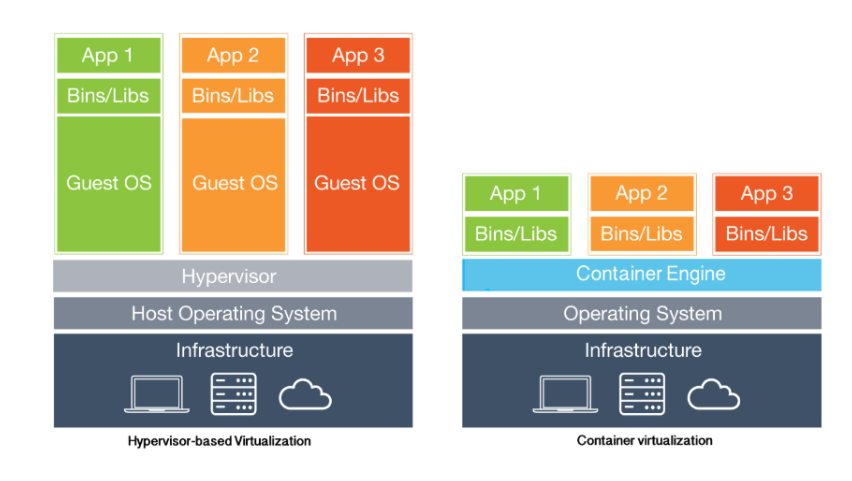

[CS] 가상화 알아보기 (w. Hypervisor, Docker)
서론
CS 스터디에서 8월 13일 발표한 가상화에 대해 정리한 문서를 블로그에 공유하고자 한다.
가상화에 대하여
가상화란?
가상화(Virtualization)란 하나의 물리적인 하드웨어 시스템(컴퓨터) 위에 추상화 계층을 생성해, 여러 개의 시뮬레이션 환경 또는 전용 리소스로 분할할 수 있게 해주는 기술을 말합니다. 즉, 하드웨어에 묶여있던 자원들을 추상화를 통해 분산하여 사용할 수 있게 해주는 기술인 것입니다.
이러한 분리는 하이퍼바이저(Hypervisor)라고 부르는 소프트웨어를 통해 이뤄지며, 가상화를 통해 생성된 가상 표현을 VM(Virtual Machine, 가상 머신)이라고 합니다.
가상화의 역사
가상화는 1960년대 대형 메인프레임 컴퓨터를 사용하던 시절, 각 메인프레임들이 한 번에 한 프로세스만 수행하던 것을 개선하고자 등장하게 되었습니다.
당시 고객의 요구로 한 메인프레임이 동시에 둘 이상의 사용자, 또는 둘 이상의 프로세스를 지원할 수 있어야 했고, 이를 위해 IBM에서는 가상 메모리를 도입한 하이퍼바이저인 IBM CP-40, CP-67 OS를 출시하며 가상화 SW가 시장에 등장하게 되었습니다.
이후 단일 공급자 IT 스택, 레거시 애플리케이션의 리소스 사용 방식으로는 변화에 유연하게 대응하기 어렵다는 점이 대두되고 인터넷이 성장하자 가상화 사용이 점점 증가하게 되었습니다.
가상화의 종류
도커의 등장으로 가장 잘 알려진 가상화인 운영체제 가상화(OS-Level Virtualization)(또는 컨테이너화(Containerization))이외에도 여러 유형의 가상화들이 존재합니다.
운영체제 가상화(OS-Level Virtualization)
컨테이너화(Containerization)라고도 불리는 이 방법은, OS의 중앙 자원 및 작업 관리자인 커널이 여러 사용자 공간(커널 외부에서 실행되는 모든 코드) 인스턴스를 허용하는 가상화를 말합니다.
사용자 공간 인스턴스(user space instance)로는 컨테이너(LXC, Solaris Container, Docker), 존(Solaris Container), 가상 커널(DragonFly BSD)등이 있습니다.
각 컨테이너들은 컴퓨터 전체에 가용한 자원 중 일부만 할당되며, 컨테이너상에서 실행되는 프로그램들은 컨테이너에 할당된 리소스들을 현재 컴퓨터(컨테이너)의 가용한 전체 리소스로 인식합니다.
데스크톱 가상화(Desktop Virtualization)

출처: VDI(가상 데스크톱 인프라)란? (feat. VDI vs. DaaS 비교 분석) | 가비아 라이브러리 (gabia.com)
중앙 서버에서 가상 머신들을 생성해 여러 데스크톱 환경을 실행하고 이를 클라이언트 기기에서 로그인한 사용자에게 스트리밍하므로써, 물리적 클라이언트 장치와 데스크톱 환경을 분리하는 것을 말합니다.
이를 가상 데스크톱 인프라(Virtual Desktop Infrastructure, VDI)라고도 합니다.
또한 VDI를 클라우드 환경을 통해 제공하는 것을 서비스형 데스크톱(Desktop-as-a-Service, DaaS)라고 합니다.
서버 가상화(Server Virtualization)
하나의 서버 컴퓨터에서 여러 개의 가상 머신을 구동해 컴퓨팅 자원을 최대한 활용하고 여러 어플리케이션을 구동할 수 있는 가상화입니다. #
네트워크 기능 가상화(Network Function Virtualization)

NFV의 아키텍처
네트워크 하드웨어로부터 라우터, 방화벽, 로드 밸런서등의 물리적인 네트워크 기능을 추상화하여, 하이퍼바이저위에서 실행중인 소프트웨어로 추상화하는 가상화를 말합니다.
따라서 네트워크 관리자는 하드웨어들을 건드리지 않고도 네트워크를 관리할 수 있고, 서비스 제공업체에 새로운 기능을 요청하면 제공업체는 새 VM을 가동해 해당 요청을 처리할 수 있게 됩니다.
장점
자원의 효율화
가상화 이전에는 하나의 애플리케이션에 하나의 서버(물리적인 CPU를 포함한)가 필요했습니다.
이러한 형태는 한 서버에서 가용한 자원을 최대로 활용할 수 없으며 사용중이지 않은 자원은 낭비 되어왔습니다.
이와 다르게, 서버 가상화를 통해 단일 컴퓨터에 자체 OS를 포함한 VM들을 실행해 다수의 애플리케이션을 실행하므로써 하드웨어의 컴퓨팅 자원을 효율적으로 사용할 수 있게 되었습니다.
시스템 관리
물리적 컴퓨팅 자원들이 가상화되었으므로, 이들을 소프트웨어 도구를 사용해 관리할 수 있게 됩니다.
인프라를 복제하는데도 자동화를 할 수 있고, 프로비저닝이 더 빨라집니다.
빠른 장애 복구
기존의 경우, 시스템 장애가 일어나면 IT 인프라 현장에 직접 접근해 물리적 서버를 교체 및 수리 하는데 많은 시간이 걸렸습니다.
반면 가상 환경에서는 중복되는 가상 머신으로 대체하여 빠르게 장애를 복구할 수 있습니다.
단점
자원 효율성
시스템에 가상화를 도입하게 되면 VM, 하이퍼바이저, 게스트 OS에서 더 많은 컴퓨팅 능력을 요구할 수 있어 때때로 하드웨어 자원 요구량을 증가시키기도 합니다.
공유 자원
VM들은 하이퍼바이저, 호스트 OS, 프로세서 내부 자원(L3 캐시, 시스템 버스 등), 프로세스 외부 자원(메인 메모리, I/O 기기 및 네트워크)을 공유하기 때문에, 단일 장애 지점이 존재할 수 밖에 없습니다.
또한 한 VM에서 실행중인 소프트웨어가 다른 VM에서 실행중인 소프트웨어에 영향을 미칠 수도 있습니다. (= 격리 위반이 발생할 수 있습니다.)
간섭
공간적 격리 실패(공유 메모리로 인한) 또는 시간적 격리 실패(간섭 지연 또는 페널티로 인한)에 의해 한 VM에서 실행중인 소프트웨어가 다른 VM에서 실행중인 소프트웨어의 동작에 영향을 미칠 수 있습니다.
이러한 간섭이 가능한 경로의 수는 VM의 수가 늘어남에 따라 빠르게 증가합니다.
예시로 아래 그림은 6개의 공유 자원(빨간색으로 표시된)을 사용하는 애플리케이션 쌍 간에 발생 가능한 3가지 간섭 경로를 나타냅니다.

하이퍼바이저(Hypervisor)
하이퍼바이저(또는 가상 머신 모니터(VMM))란, 호스트 머신에서 가상 머신(VM)을 생성 및 실행하는 소프트웨어로 VM들을 생성 및 관리합니다.
하이퍼바이저는 CPU, 메모리, 스토리지 등 컴퓨팅 자원들을 기존 게스트 머신 간에, 또는 새로운 VM으로 쉽게 재배치할 수 있는 자원 풀로 취급해 물리적 자원과 가상 환경을 분리합니다.

일반적으로 하이퍼바이저는 하드웨어상에서 직접 실행되는 타입 1(bare-metal) 또는 호스트 운영체제 위에서 실행되는 타입 2(Hosted)로 나뉩니다.
타입 1

타입 1 하이퍼바이저는 호스트의 하드웨어에서 직접 실행 되어 게스트 OS들을 관리합니다.
그리고 호스트 OS를 대신해 하드웨어에 직접 가상 머신들의 자원들을 조정합니다.
타입 1과 같은 형태의 하이퍼바이저는 1960년대 IBM CP에서 시작되었으며, 엔터프라이즈 및 서버기반 환경에서 일반적인 형태입니다.
KVM(커널-기반 가상 머신), MS Hyper-V, VMWare vSphere 등이 타입 1의 대표적인 예시 입니다.
타입 2

타입 2 하이퍼바이저는 일반 프로그램처럼 호스트 OS 위 에서 실행되는 하이퍼바이저를 말합니다.
게스트 OS를 호스트 OS로부터 추상화시키는 방식으로 동작하며, 가상 머신들의 자원은 호스트 OS에 의해 스케줄링되며 이후 하드웨어에 의해 실행됩니다.
타입 2에 해당하는 하이퍼바이저로는 Oracle VirtualBox, VMWare Workstation 등이 있습니다.
가상 머신(Virtual Machine)
가상 머신(또는 게스트 머신)이란, 하드웨어 자원 풀에서 생성된 컴퓨팅 환경으로, 자체 CPU, 메모리, 네트워크 인터페이스, 저장공간 등을 갖춘 격리된 시스템을 말합니다.
달리 말하자면, 게스트 OS를 위한 가상 운영 환경을 제공하는 하드웨어 플랫폼의 소프트웨어 시뮬레이션이라고 할 수 있습니다.
이러한 VM들을 실행하는 물리적 기기를 호스트 머신이라고 부르며, 호스트 머신의 자원을 사용하는 VM들을 게스트 머신이라고 부릅니다.
가상 머신을 사용하게 되면, 한 컴퓨터에서 여러 개의 서로 다른 OS를 동시에 실행할 수 있으며 각 OS는 호스트 머신에서 실행되는 것과 동일한 방식으로 실행됩니다.
Docker는 어디에 속하는가? 그리고 Docker가 많이 사용되는 이유는?
OS 가상화, 즉 컨테이너화와 가상 머신을 사용하는 가상화 중 Docker는 컨테이너화에 속한다고 할 수 있습니다.
가상 머신 - 컨테이너의 차이점

가상 머신의 경우, 하이퍼바이저를 사용해 물리적 하드웨어를 가상화하게 됩니다. 따라서 각 가상 머신에 게스트 OS와 이에 필요한 프로세서, 메모리 등의 자원을 할당하여 사용합니다.
또한 서로 다른 OS를 실행하는 가상 머신들이 하나의 물리적 하드웨어 위에서 구동될 수 있습니다.
컨테이너는 하드웨어 대신 운영체제를 가상화하기 때문에 별도의 게스트 OS 없이 호스트 OS위에서 구동됩니다. 따라서 각 컨테이너들은 애플리케이션과 이에 필요한 의존성 및 라이브러리만 포함하며, 가상 머신과 달리 메인 메모리 등의 자원을 미리 할당할 필요가 없습니다.
Docker의 장점
도커는 앞서 말씀드린 것 처럼 여러 패키지, 종속성들을 묶어 이미지화 할 수 있어 이식성이 뛰어나다는 장점이 있습니다.
이는 여러 클라우드 환경이 보편화된 현재에 상당한 장점인데, 특히 어제는 A 공급자의 클라우드에서 실행하던 것을 오늘은 B 공급자의 클라우드에 배포해야하는 등 유연함이 필요한 상황에 빛을 발합니다.
이에 더해 운영체제와 관련된 세부 정보를 추상화하므로, 개발/테스트/프로덕션 등 다양한 환경에서 배포할 때의 문제를 해결하고, CI/CD를 포함한 자동화 및 파이프라인 구현에 알맞습니다.
그리고 미리 일정량의 자원을 할당해주어야 하는 VM과 달리, 도커 컨테이너는 온디맨드 방식으로 자원을 요청하기 때문에 더 시스템 자원을 효율적으로 사용할 수 있습니다.
- Docker 및 VM 비교 - 애플리케이션 배포 기술 간의 차이 - AWS (amazon.com)
- Difference Between Docker and Virtualization - GeeksforGeeks
- 컨테이너와 VM 비교 - 배포 기술 간의 차이점 - AWS (amazon.com)
한 Host OS상에서 구동되므로 컨테이너 간 간섭이 예상되는데, 이를 어떻게 방어할 수 있는가?
Docker는 기본적으로 Linux OS 위에서만 실행됩니다.
따라서 Linux에서 프로세스 격리를 위해 사용되는 namespace와 cgroup를 사용해 격리성을 높일 수 있습니다.
namespace
namespace는 Linux 커널의 기능으로, 전역 시스템 자원(커널 자원)을 추상화하여 각 네임스페이스내에 격리된 자체 전역 자원 인스턴스가 있는 것처럼 보이게하는 기능입니다.
즉, 각 프로세스들은 본인이 속한 네임스페이스의 자원을 볼 수 있으며, 다른 네임스페이스의 자원은 볼 수 없습니다.
이러한 네임스페이스 유형으로는 cgroup, IPC, Network, Mount, PID(Process ID) 등이 있습니다.
일반적으로 Linux에서는 새로운 프로세스를 실행할 경우 1번 프로세스의 네임스페이스를 공유하게 됩니다.
- Linux namespaces - Wikipedia
- namespaces(7) - Linux manual page (man7.org)
- 리눅스 네임스페이스(Linux Namespace)란? | 44BITS
cgroup
cgroup(control group)은 Linux 커널의 기능으로, CPU 시간, 시스템 메모리, 네트워크 대역폭 등의 자원을 프로세스 모음에 할당 및 제한하고, 이들을 모니터링할 수 있는 기능입니다.
프로세스들은 일련의 매개변수 또는 제한(limits)에 의해 각각의 프로세스 모음에 바인딩됩니다.
부모로 부터 자식 프로세스가 생성되는 Linux 프로세스 모델처럼, cgroup 모델 역시 계층적이며 자식 cgroup은 부모 cgroup의 특정 속성을 상속하는 등 유사한 형태를 띕니다.
- cgroups - Wikipedia
- 1장. 컨트롤 그룹 (Cgroups) 소개 | Red Hat Product Documentation
- cgroups(7) - Linux manual page (man7.org)
Enhanced Container Isolation (ECI)
ECI(Enhanced Container Isolation)는 컨테이너에서 실행되는 악성 워크로드들이 Docker 또는 호스트를 손상시키지 못하게 추가적인 보안 계층을 제공하는 기능입니다.
ECI는 모든 프로세스를 Linux 사용자-네임스페이스를 통해 권한 없이(unprivileged) 실행하며, --privileged 플래그도 무시합니다. 또한 컨테이너나 유저가 내부 설정을 수정할 수 없게해 Docker VM의 불변성을 보장합니다.
그리고 컨테이너 탈출을 방지하기 위해 몇몇 중요 system call을 검사하고, 컨테이너 내부의 /proc과 /sys 일부를 가상화해 추가적으로 격리를 진행합니다.
또한 사용자 콘솔에서 Docker Desktop VM에 접근하지 못하도록 차단합니다.
ECI를 사용하면 기능 및 성능에 대한 영향을 최소화한체, 이러한 기능들이 적용됩니다.
Docker 위에 Docker를 올릴 수 있을까?
가능합니다.
크게 도커 컨테이너 내부에서 privileged 모드를 통해 도커 데몬을 실행하는 DinD(Docker in Docker) 방식과, 동일한 도커 데몬상에 컨테이너를 추가 생성한 뒤 소켓 파일(/var/run/docker.sock)을 공유해 호스트 컨테이너(도커 서버)가 도커 명령을 실행하는 방식인 DooD(Docker out of Docker) 두 가지가 있습니다.
- 도커 컨테이너 안에서 도커 실행하기(Docke.. : 네이버블로그 (naver.com)
- Docker in Docker vs Docker Outside of Docker | NIXKNIGHT
- Jenkins - Docker-in-Docker | NIXKNIGHT
- Docker can now run within Docker | Docker